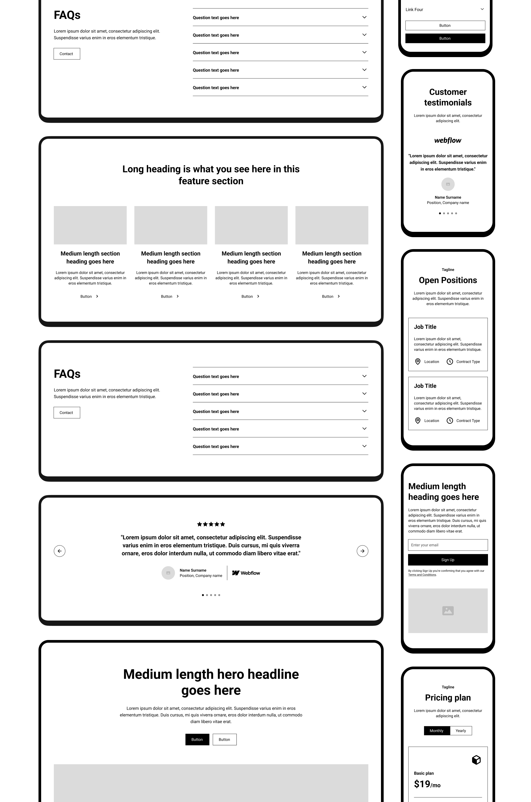

Official Starter Project
This is the official starter project for Relume. It includes a style guide with pre-built classes and serves as an ideal starting point for any project using Relume's Site Builder and Webflow Library.
Relume's Webflow Library uses the Client-First Webflow Style System to keep your Webflow projects more organized and maintainable.
